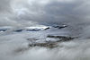

aerosol
form

Source: Wikipedia
Wikipedia Page (Something wrong with this association? Let us know.)
Wikidata Page (Something wrong with this association? Let us know.)
Occurs in:
- atmosphere_dust~aerosol__reduction_of_transmittance
- atmosphere_aerosol_radiation~incoming~shortwave~absorbed__energy_flux
- atmosphere_aerosol_radiation~incoming~shortwave_absorption__absorptance
- atmosphere_aerosol_radiation~incoming~shortwave_reflection__reflectance
- atmosphere_aerosol_radiation~incoming~shortwave~reflected__energy_flux
- atmosphere_aerosol_radiation~incoming~shortwave_transmission__transmittance
- atmosphere_aerosol_radiation~incoming~shortwave~transmitted__energy_flux
- atmosphere_aerosol_radiation~outgoing~longwave_emission__emittance
- atmosphere_aerosol_radiation~outgoing~longwave~downward__energy_flux
- atmosphere_aerosol_radiation~outgoing~longwave~upward__energy_flux
- atmosphere_air_column_aerosol~dry_ammonium__mass-per-area_density